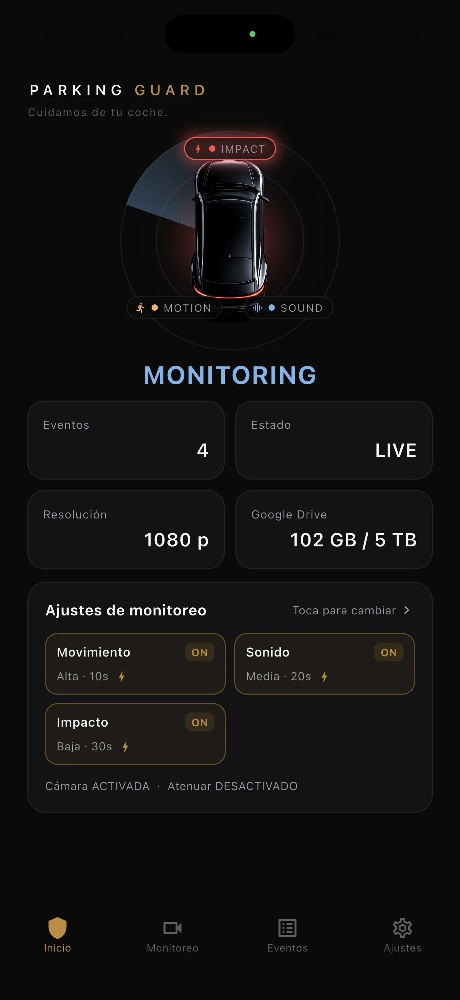

Revisa primero el móvil
Usa un dispositivo con batería sana, cámara fiable, espacio libre suficiente y un sistema compatible con la app.
Da al móvil viejo una segunda función
Un móvil de repuesto ya reúne cámara, micrófono, sensores de movimiento, pantalla, almacenamiento y conexión. Convertirlo en cámara para el coche es sobre todo una tarea de preparación: comprobar su estado, eliminar interrupciones, conceder los permisos necesarios, sujetarlo con seguridad y probar todo el recorrido desde el detector hasta el vídeo guardado.
Actualizado:

Usa un dispositivo con batería sana, cámara fiable, espacio libre suficiente y un sistema compatible con la app.
Reduce avisos, protege la cuenta, prepara la energía y emplea un soporte estable adecuado a la ventanilla elegida.
Activa movimiento, sonido y una vibración inofensiva mientras estás presente, y abre los clips reales antes de dejarlo solo.
Inspecciona el dispositivo antes de dejarlo en el coche. Una batería hinchada, carcasa dañada, carga inestable, sobrecalentamiento intenso, cámara defectuosa o apagados inesperados lo descartan. Instala las actualizaciones disponibles para ese modelo, confirma cámara y micrófono, y deja espacio libre para los eventos y el funcionamiento normal del sistema.
Retira el contenido personal que no necesites en un aparato dejado en el vehículo. Configura un código sólido, comprueba la recuperación de la cuenta y decide si hace falta una SIM. La grabación se guarda primero en el teléfono, así que el archivo local no exige datos móviles; la subida opcional a Google Drive sí necesita cuenta configurada y conexión disponible.
En iPhone, BlackShisa debe permanecer en primer plano y la pantalla encendida. Ajusta el tiempo de pantalla y el brillo teniendo en cuenta esa condición, conecta alimentación solo con equipos apropiados y limita la sesión a lo razonable para el entorno. No ocultes la app detrás de otra ni des por hecho que un iPhone bloqueado seguirá vigilando igual.
En Android, la app utiliza un servicio en primer plano y depende de los permisos concedidos. Completa los avisos de cámara, micrófono, notificaciones y gestión de batería que correspondan y confirma que sigue visible la notificación del servicio. Las políticas de ahorro varían por fabricante; prueba el mismo teléfono después de reiniciarlo en lugar de copiar ajustes de otro modelo.
Elige si la sesión cubrirá la aproximación frontal, una puerta vecina, el paso de carritos, la esquina trasera u otro riesgo. Usa un soporte que no pueda convertirse en objeto suelto y no tape la visibilidad necesaria, mandos, aireadores o airbags. Limpia lente y cristal, acercándolos lo suficiente para reducir reflejos sin forzar una luna móvil.
Graba una prueba a la hora prevista. Recorre la trayectoria, abre con seguridad una puerta cercana y produce un sonido normal. Comprueba en el archivo guardado encuadre, enfoque, reflejos, audio y orden temporal. Si el objetivo queda pequeño u oculto, mueve el teléfono; aumentar la detección no recupera detalles que la cámara nunca vio.
BlackShisa puede activar eventos por movimiento, sonido o impacto. La grabación contiene tres segundos anteriores y 10, 30 o 60 segundos posteriores según tu selección. Prueba cada detector que usarás. Una persona de paso, un motor ruidoso o una vibración normal pueden crear eventos ajenos, mientras una acción oculta o muy leve puede no crear ninguno.
Revisa los archivos tras la sesión y conserva los originales relevantes. Google Drive es opcional; si lo activas, verifica cuenta de destino y subida completada. Una cámara hecha con un móvil no garantiza prevención, identificación ni aceptación de una grabación. Valora calor, batería, riesgo de robo, privacidad y reglas locales antes de dejarla en el vehículo.
FAQ
Respuestas directas, incluidos los límites que conviene conocer antes de confiar en un móvil de repuesto.
No para la grabación local de eventos. Necesitarás una red si quieres la subida opcional a Google Drive, y su disponibilidad dependerá de la conexión elegida.
Las llamadas, avisos, navegación o la necesidad de llevártelo pueden interrumpir la sesión. Un aparato dedicado mantiene con más facilidad el mismo soporte y configuración.
Comprueba encuadre montado, reacción de los detectores, clip guardado con tramo previo y posterior, espacio, energía y el estado requerido de iOS o del servicio de Android.
Revisa su estado, configura permisos, asegura el soporte y abre un evento de prueba real antes de usarlo para vigilar el coche.